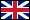

<mat-sidenav-container class="sidenav-container">
  <mat-sidenav #drawer mode="side" class="sidenav custom-sidenav" [opened]="true">
    <mat-toolbar>{{ 'menu' | translate }}</mat-toolbar>

    <mat-nav-list>
      <a mat-list-item routerLink="/">{{ 'home' | translate }}</a>
      <a mat-list-item routerLink="/favorites">{{ 'favorites' | translate }}</a>
      <a mat-list-item routerLink="/about">{{ 'about' | translate }}</a>
    </mat-nav-list>

    <!-- Language Switcher -->
    <div class="language-switcher">
      <button mat-icon-button matTooltip="Greek" (click)="switchLang('el')">
        
      </button>
      <button mat-icon-button matTooltip="English" (click)="switchLang('en')">
        
      </button>
    </div>
  </mat-sidenav>

  <mat-sidenav-content>
    <mat-toolbar color="primary" class="app-toolbar">
      <button mat-icon-button (click)="drawer.toggle()">
        <mat-icon>menu</mat-icon>
      </button>
      <span class="app-title">🌦️ Weather</span>
    </mat-toolbar>

    <div class="main-content">
      <router-outlet></router-outlet>
    </div>
  </mat-sidenav-content>
</mat-sidenav-container>
